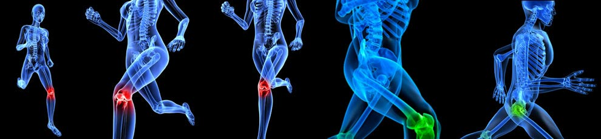
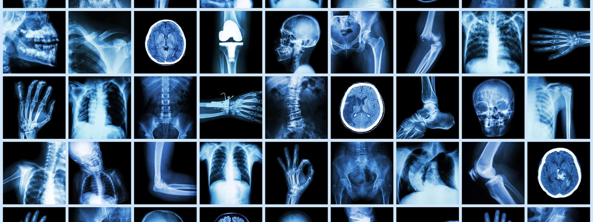

HOSPITAL MANAGEMENT
1.ORTHOPAEDICS DEPARTMENT

Excellence in patient care,research, and education is the overall goal of department of orthopadics.
The department of orthopadic surgery provides a comprehensive and integrated orthopadic program for patients,students,residents and fellows.
In addition to general orthopadics,the department has a faculty which specializes in the field of joint replacement.
sports medicine,hand surgery,musouloskeletal oncology,pediatric orthopadics.spine surgery and treatment of complex trauma.
The recent innovations in orthopadics surgery such as minimally invasive joint replacement,surface replacement arthoplasty,revision hip and knee replacements.
minimally invasive spine surgery,vascularised grafting for non unions, limb reimplatations ,arthoscopic PCL and shoulder surgery are all being practiced with excellent result.
2.SKIN DEPARTMENT
The division of dermatology at medanta is known for its commitment towards providing a full range of dermatologic care for both common and
rare prodlems of skin ,hair,nails and mucous membranes ,
and also provides treatment for sexually tranmitted diseases and HIV.
the division follows intemational. protocol for providing quality servics at accessible prices,
and the safety of the patient
is the topmost priority for the doctors te department was set up in1950s under the chairranship of late prof K C kandhari,
and subsequently iconic personalities like last
3.PLASTIC SURGERY DEPARTMENTS
The department of plastic,reconstructive and burns surgery was established in 2015 .although in its nascent stage is already making its present known - not just nationally but also international arena also
the deparment works in the collebaration with varies other department such as neurosergery cardiac surgery,orthopedic surgery etc..
the endeavor of the young and enthusiastic team of surgeons is to reduce the morbidity and provide functionality by reconstructive and microsurgical producers thereby providing an imporved quality of life to the patient
4.CARDIOLOGY DEPARTMENT
the department of cardiology as developed excellent facility for clenical under fully developed facility for adults and pediatric interventions including coronory interventions
valvuloplasty,device closure of congenital shunts and electrophysilogy services.
laboratory testing facility incllude treadmill testing .holter recording echocordiography.
tilt testing for syncope and electrophysiology testing including CARTO system mapping.
5.RADIOLOGY DEPARTMENT

our radiology service as led highly qualified radiologists with dedicated fellowship training from world-leading medicle centers. the multidisciplinary team includes radiologist
and radiographers and nursing. physics adminstration and supports staff.
we are actively involved in ongoing clinical research and training to ensures the best possible service is provided to all who access our service.